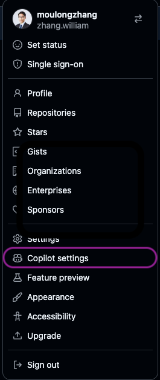

GitHub Copilotワークショップへようこそ！

このワークショップでは、GitHub Copilot CLI を中心に、最新の AI 駆動開発を体験していただきます。Copilot CLI はターミナル上で動作する対話型の AI アシスタントであり、コード生成・レビュー・リファクタリングなどの幅広いタスクを自律的に実行できます。
本日のゴール
- GitHub Copilot CLI の基本操作を理解する
- Copilot SDK を活用した Web アプリケーション開発を体験する
- 複数の AI モデルを使ったコードレビューを実践する
- Agentic Workflow による開発プロセスの自動化を構築する
本日のアジェンダ
ステップ | 内容 | 概要 |
1 | ワークショップについて | 概要説明とゴールの確認 |
2 | プロジェクトセットアップ | リポジトリの作成と開発環境の準備 |
3 | Copilot SDK で AI チャットツールを作ろう | Copilot SDK を使って1プロンプトで Web アプリを構築 |
4 | Copilot Code Review | 複数モデルを使ったコードレビュー |
5 | Agentic Workflow | AI エージェントによる開発プロセスの自動化 |
前提条件
- Visual Studio Code がインストールされていること
- GitHub Copilotのライセンスがあること（Business/Enterprise プラン推奨）
- GitHubアカウントを持っていること
このワークショップでは、以下のGitHubリポジトリを使用します：
プロジェクトURL: https://github.com/moulongzhang/2026-Github-Copilot-Workshop-Python
ステップ1: テンプレートからリポジトリを作成する
まず、上記のプロジェクトURLをブラウザで開き、テンプレートから自分のリポジトリを作成します：
- プロジェクトURL（https://github.com/moulongzhang/2026-Github-Copilot-Workshop-Python）をブラウザで開く
- 右上の Use this template ボタンをクリックし、Create a new repository を選択
 テンプレートからの作成が完了すると、あなたのGitHubアカウントに新しいリポジトリが作成されます。
テンプレートからの作成が完了すると、あなたのGitHubアカウントに新しいリポジトリが作成されます。
ステップ2: 開発環境のセットアップ
作成したリポジトリを使って、GitHub Codespacesで開発環境を準備します：
- 作成したリポジトリのページで（
https://github.com/copilot-hands-on/[リポジトリ名]） - 緑色の Code ボタンをクリック
- Codespaces タブを選択
- Create codespace on main をクリック

ステップ3: Copilot の設定確認
GitHubで利用可能なCopilot機能を有効化しましょう。
- GitHubの右上のプロフィールアイコンをクリック
- Copilot Settings を選択

以下の機能を有効化してください：
- Copilot CLI - ターミナルでのCopilot利用
- Copilot code review - コードレビュー機能
ここからは、Copilot SDK を使って、ブラウザ上で動作する生成 AI チャットツールを Copilot CLI から1つのプロンプトで 構築します。
Copilot SDK とは？
Copilot SDK は、GitHub Copilot CLI をプログラムから制御するための SDK です。JSON-RPC を介して Copilot CLI と通信し、AI セッションの作成・メッセージの送受信・ストリーミングレスポンスの取得などをアプリケーションに組み込むことができます。
SDK リポジトリ: https://github.com/github/copilot-sdk
何を作るか
ブラウザから AI とリアルタイムにチャットできる Web アプリケーションを作ります：
- フロントエンド: ブラウザ上のチャット UI（React + TypeScript）
- バックエンド: Copilot SDK を使って AI セッションを管理する Node.js サーバー
- リアルタイム通信: WebSocket でストリーミングレスポンスを配信
Copilot SDK の主要 API
API | 説明 |
| CLI サーバーとの接続を管理するクライアント |
| 新しい会話セッションを作成 |
| メッセージを送信 |
| ストリーミングレスポンスのチャンクを受信 |
| 最終レスポンスを受信 |
| セッションの処理完了を検知 |
| すべてのツール実行パーミッションを自動許可 |
| チャット用の標準ツールセットを生成 |
| ツール実行前のフック（入力の検証・変換などに使用） |
| ツール実行後のフック（結果のログ・加工などに使用） |
SDK の基本的な使い方
import { CopilotClient, approveAll, createChatTools } from "@github/copilot-sdk";
const client = new CopilotClient();
await client.start();
const session = await client.createSession({
model: "gpt-5",
onPermissionRequest: approveAll,
tools: createChatTools(),
hooks: {
onPreToolUse: (input, invocation) => {
console.log(`ツール実行前: ${invocation.toolName}`, input);
},
onPostToolUse: (input, invocation) => {
console.log(`ツール実行後: ${invocation.toolName}`, input);
},
},
});
session.on("assistant.message_delta", (event) => {
process.stdout.write(event.data.deltaContent);
});
await session.send({ prompt: "Hello!" });
Copilot SDK の概要を理解したら、いよいよ Vibe Coding でブラウザ AI チャットツールを実装していきます。
ステップ 1: Copilot CLI を起動する
VS Code のターミナルで Copilot CLI を起動します。
copilot
ステップ 2: すべてのパーミッションを許可する
/allow-all
/allow-all は、Copilot CLI に対してツールの実行・ファイルアクセス・外部URLへのアクセスのすべてのパーミッションを一括で許可するコマンドです。
通常、Copilot CLI はセキュリティのために、ファイルの読み書きやコマンドの実行、外部通信を行う際にユーザーへ都度許可を求めます。/allow-all を実行することで、これらの確認プロンプトをスキップし、Copilot がファイルの作成・編集、パッケージのインストール、サーバーの起動などを自律的に実行できるようになります。
ステップ 3: ハイエンドモデルを選択する
/model
モデル一覧から最も高性能なモデル（例: Claude Opus 4.6）を選択してください。複数コンポーネントを持つ Web アプリケーションの構築には、推論能力の高いハイエンドモデルが効果的です。
ステップ 4: Autopilot モードに切り替える
Shift+Tab を押して、Copilot CLI を Autopilot モード に切り替えてください。Autopilot モードでは、Copilot がファイルの作成・編集やコマンドの実行を確認なしで自律的に進めるため、大規模な実装を一気に行う Vibe Coding に最適です。
ステップ 5: 1プロンプトで一気に実装する
以下のプロンプトを Copilot CLI に投げてください。/fleet コマンドで複数のエージェントが並列に動作し、SDK を使ったブラウザ AI チャットツールを一気に構築します：
/fleet Copilot SDK を使って、ブラウザ上で動作する AI チャット Web アプリケーションを copilotWebRelay/ ディレクトリに構築してください。
SDK リファレンス: https://github.com/github/copilot-sdk
要件:
- バックエンド: Node.js + Express + WebSocket サーバー
- Copilot SDK の CopilotClient でセッションを管理
- createSession() でモデル "gpt-5" を使用、onPermissionRequest には approveAll を使用
- session.on("assistant.message_delta") でストリーミングレスポンスを WebSocket 経由でクライアントに配信
- session.on("session.idle") で完了を通知
- フロントエンド: React + TypeScript + Vite
- モダンなチャット UI（メッセージ入力欄、送信ボタン、チャット履歴表示）
- WebSocket でサーバーに接続し、ストリーミングレスポンスをリアルタイム表示
- Markdown レンダリング対応
- 開発環境: npm scripts でバックエンドとフロントエンドを同時起動できること
- 動作確認まで行ってください
つまずいた場合のヒント
実装でエラーが発生した場合は、以下を試してみましょう：
- エラーメッセージをそのまま Copilot に共有: 「このエラーを修正してください」と伝えるだけで修正してくれます
/diffで変更内容を確認: 意図しない変更がないかチェック/modelでモデルを変更: 別のモデルに切り替えて再試行
Copilot Web Relay の実装が完了したら、Copilot CLI のレビュー関連コマンド を使って、複数の AI モデルでコードレビューを行いましょう。異なるモデルの視点から品質・セキュリティ・パフォーマンスの問題を多角的に検出することがゴールです。
レビューに使う主なコマンド
Copilot CLI にはコードレビューに活用できるコマンドが複数用意されています。
コマンド | 説明 |
| コードレビューエージェントを実行して変更を分析する |
| 使用する AI モデルを選択する（Claude、GPT、Gemini 等） |
| 直前のターンを巻き戻し、ファイル変更を元に戻す |
ステップ 1: コードをコミット & Push する
Copilot CLI で以下のように指示して、実装をコミット & Push します：
実装した Copilot Web Relay のコードをすべて git add して、適切なコミットメッセージでコミットし、feature/copilot-web-relay ブランチにプッシュして、main ブランチへの Pull Request を作成してください。
ステップ 2: 複数モデルでレビュー & Pull Request にコメント
Copilot CLI で以下のプロンプトを入力して、複数モデルによるレビューから PR コメントまでを一気に実行します：
/review opus4.6, GPT5.4の各モデルでPull Requestをレビューいただき、結果をまとめていただき、結果をPull Requestにコメントとして残してください
このプロンプトだけで、以下が自動的に実行されます：
- Claude Opus 4.6 によるコードレビュー
- GPT-5.4 によるコードレビュー
- 各モデルのレビュー結果の統合・比較
- Pull Request へのレビューコメントの投稿
修正に問題があった場合は、/undo で直前のターンを巻き戻してファイル変更を元に戻すことができます。
ステップ 3: GitHub 上での Code Review
GitHub 上でも Copilot Code Review 機能を併用しましょう：
- GitHub 上で Pull Request を開く
- Reviewers セクションで Copilot をレビュワーとしてアサイン

最後のステップでは、GitHub Agentic Workflow を構築し、AI エージェントが開発プロセスを自律的に自動化する仕組みを体験しましょう。
Agentic Workflow とは
Agentic Workflow は、GitHub Actions 上で AI エージェントが作業を自律的に実行する仕組みです。2026年2月13日にテクニカルプレビューとして発表されました。
従来の GitHub Actions はあらかじめ決められたステップを順番に実行するものでしたが、Agentic Workflow では AI が状況を判断し、必要なアクションを自律的に決定・実行 します。
何ができるか
Agentic Workflow を使うことで、以下のような開発タスクを AI エージェントに委任できます：
ユースケース | 説明 |
Issue の自動トリアージ | 新しい Issue の内容を AI が分析し、ラベル付け・担当者アサイン・優先度設定を自動実行 |
PR レビューの自動化 | Pull Request の変更内容を AI がレビューし、コメントや改善提案を自動投稿 |
CI エラーの分析と修正 | CI/CD パイプラインのエラーを AI が分析し、原因特定と修正 PR の自動作成 |
ドキュメント管理 | コード変更に連動してドキュメントを自動更新し、コードとドキュメントの一貫性を維持 |
リリースノート生成 | マージされた PR やコミット履歴から、リリースノートを自動生成 |
主なメリット
- 自然言語で記述: ワークフローの目的を自然言語（Markdown）で記述するだけで、AI が処理内容を判断して実行する
- 柔軟なトリガー: スケジュール実行、イベントトリガー（Push、PR作成）、Issue コメントコマンドなど、多様な起動条件に対応
- 自律的な判断: AI エージェントがコードの変更内容を理解し、何をすべきかを自ら判断する
始め方
Agentic Workflow は gh aw CLI 拡張機能を使って作成します：
- Markdown ファイルを作成 — ワークフローの目的と動作を自然言語で記述
- コンパイル —
gh awが Markdown を GitHub Actions のワークフロー YAML に変換 - コミット & Push — ワークフローがリポジトリに追加され、トリガー条件に応じて自動実行
ステップ 1: PAT（Personal Access Token）の作成
Agentic Workflow が GitHub Actions で Copilot を利用するために、Personal Access Token を作成します。
Fine-grained PAT の作成
以下のURLにアクセスして、新しいFine-grained PATを作成します：
https://github.com/settings/personal-access-tokens/new
設定内容：
- Token name: 任意の名前を入力してください（例:
copilot-workshop） - Resource owner: 自分のユーザーアカウントを選択
- Repository access: Public repositories を選択
- Permissions: Copilot Requests を有効化

作成が完了したら、表示されたPATを必ずコピーしてください。
Repository Secret に設定
作成したPATをリポジトリのシークレットとして設定します：
- 自分のリポジトリの Settings タブをクリック
- 左サイドバーから Secrets and variables → Actions を選択
- New repository secret をクリック
- 以下の内容を入力：
- Name:
COPILOT_GITHUB_TOKEN - Value: 先ほど作成したPATを貼り付け
- Name:
- Add secret をクリック
Workflow permissions の確認
- 自分のリポジトリの Settings タブをクリック
- 左サイドバーから Actions → General を選択
- Workflow permissions セクションで Allow GitHub Actions to create and approve pull requests にチェックが入っていることを確認
- チェックが入っていない場合は有効化して Save をクリック
ステップ 2: ドキュメント自動更新ワークフローの作成
まずは、コード変更に連動してドキュメントを自動更新する Agentic Workflow を作成しましょう。Copilot CLI で以下のプロンプトを入力してください：
以下のURLを参照して GitHub Agentic Workflow を作成してください。
https://github.com/github/gh-aw/blob/main/create.md
ワークフローの目的は以下のとおりです：
- copilotWebRelay 配下のコードが更新された時に実行されます
- copilotWebRelay 配下のコードの内容に応じて copilotWebRelay/docs のドキュメンテーションを更新し、ソースコードとドキュメンテーションが常に一致するようにします
ステップ 3: ワークフローの動作確認
ワークフローが作成できたら、コードに変更を加えて動作を確認しましょう：
- Copilot Web Relay のコードに小さな変更を加える（例: コメントの追加、関数の改善など）
- 変更をコミットして Push する
- GitHub の Actions タブでワークフローが実行されていることを確認
- ワークフロー完了後、ドキュメントを更新する Pull Request が自動的に作成されることを確認
ステップ 4: Auto Healing DevOps の作成（オプション）
余裕がある方は、CI/CD のジョブが失敗した時にそれを検知して自動修正する Agentic Workflow も作成してみましょう。これは CI エラー分析 のユースケースです。
以下のURLを参照して GitHub Agentic Workflow を作成してください。
https://github.com/github/gh-aw/blob/main/create.md
ワークフローの目的は以下のとおりです：
リポジトリで失敗したワークフロー実行を検知し、原因を分析してIssueを自動作成する。
作成したissueにはCopilotを自動アサインする。
ワークフローが作成できたら、意図的にビルドを失敗させて動作を確認します：
System.out.println("Hello World!"); を System.out.println("Hell World!"); にして push して
Push 後、GitHub Actions のワークフローが失敗を検知し、Copilot が自動的に Issue を作成してアサインされることを確認しましょう。
今日学んだこと
このワークショップでは以下のことを学びました：
- GitHub Copilot CLI の基本操作 — ターミナル上でのAIアシスタントの活用
- Copilot SDK を活用した Web アプリケーション開発 — 1プロンプトで SDK ベースの AI チャットツールを構築
- 複数モデルによるコードレビュー — Claude、GPT、Gemini を使い分けた多角的なコード品質チェック
- Agentic Workflow — GitHub Actions 上で AI エージェントが開発プロセスを自律的に自動化する仕組みの構築
次のステップ
- 実際のプロジェクトで Copilot CLI を活用してみる
/reviewを日常のコードレビューワークフローに組み込む- Agentic Workflow を自社のCI/CDパイプラインに導入する
- Copilotの新機能をキャッチアップする
リソース
お疲れさまでした！